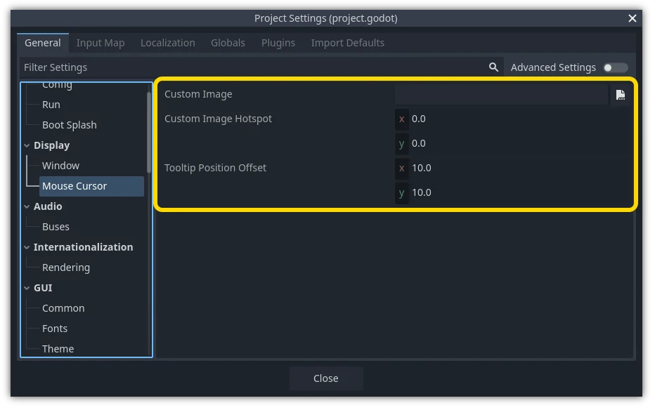

Customizing the mouse cursor
You might want to change the appearance of the mouse cursor in your game in order to suit the overall design. There are two ways to customize the mouse cursor:
Using project settings. This is simpler, but more limited.
Using a script. This is more customizable, but involves scripting.
Note
You could display a "software" mouse cursor by hiding the mouse cursor and
moving a Sprite2D to the cursor position in a _process() method, but
this will add at least one frame of latency compared to a "hardware" mouse
cursor. Therefore, it's recommended to use the approach described here
whenever possible.
If you have to use the "software" approach, consider adding an extrapolation step to better display the actual mouse input.
Using project settings
Open the Project Settings and go to Display > Mouse Cursor. You will see the settings Custom Image, Custom Image Hotspot, and Tooltip Position Offset.

Custom Image is the desired image that you would like to set as the mouse cursor. Custom Hotspot is the point in the image that you would like to use as the cursor's detection point.
Warning
The custom image must be 256×256 pixels at most. To avoid rendering issues, sizes of 128×128 or smaller are recommended.
On the web platform, the maximum allowed cursor image size is 128×128.
Using a script
Create a Node and attach the following script.
extends Node
# Load the custom images for the mouse cursor.
var arrow = load("res://arrow.png")
var beam = load("res://beam.png")
func _ready():
# Changes only the arrow shape of the cursor.
# This is similar to changing it in the project settings.
Input.set_custom_mouse_cursor(arrow)
# Changes a specific shape of the cursor (here, the I-beam shape).
Input.set_custom_mouse_cursor(beam, Input.CURSOR_IBEAM)
using Godot;
public partial class MyNode : Node
{
public override void _Ready()
{
// Load the custom images for the mouse cursor.
var arrow = ResourceLoader.Load("res://arrow.png");
var beam = ResourceLoader.Load("res://beam.png");
// Changes only the arrow shape of the cursor.
// This is similar to changing it in the project settings.
Input.SetCustomMouseCursor(arrow);
// Changes a specific shape of the cursor (here, the I-beam shape).
Input.SetCustomMouseCursor(beam, Input.CursorShape.Ibeam);
}
}
See also
Check Input.set_custom_mouse_cursor()'s documentation for more information on usage and platform-specific caveats.
Cursor list
There are multiple mouse cursors you can define, documented in the Input.CursorShape enum. Which ones you want to use depends on your use case.